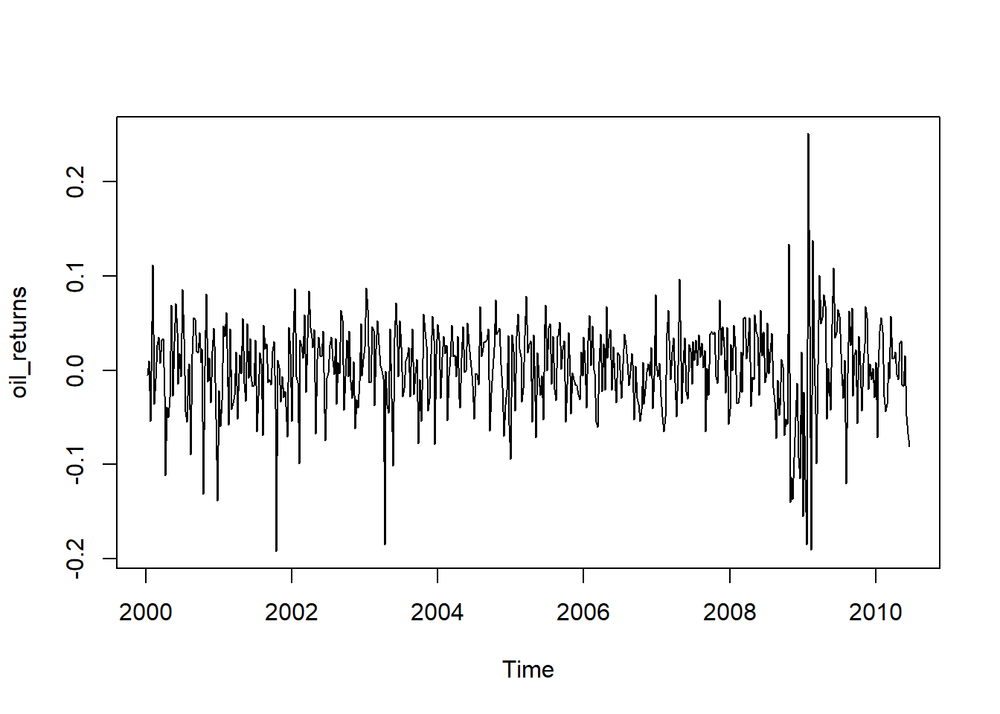
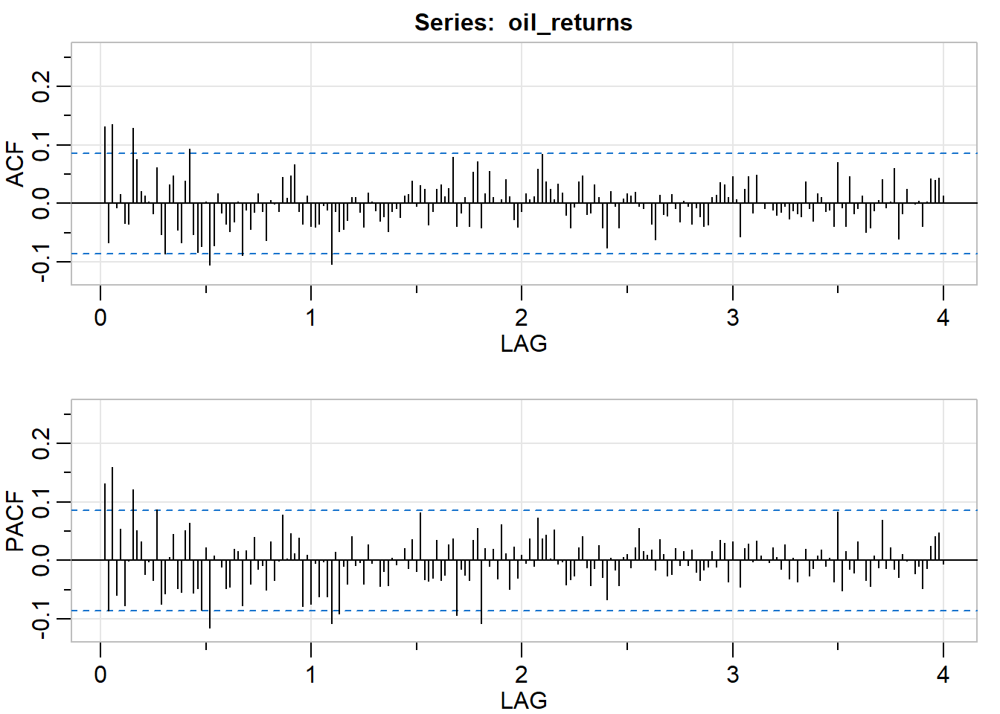
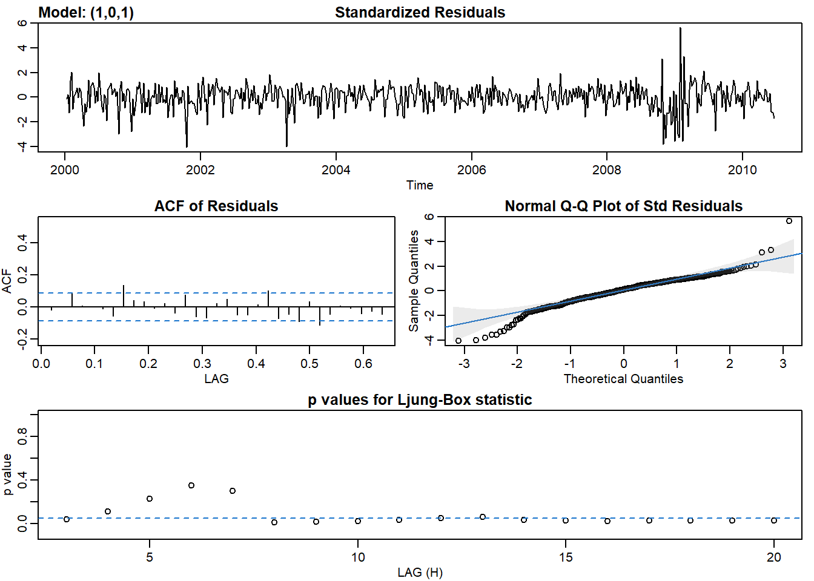

10 Chapter 5 Lab
An example using ARMA(1,1) process:
library(astsa)
# Calculate approximate oil returns
oil_returns <- diff(log(oil))
# Plot oil_returns. Notice the outliers.
plot(oil_returns)
# Plot the P/ACF pair for oil_returns
acf2(oil_returns)
## [,1] [,2] [,3] [,4] [,5] [,6] [,7] [,8] [,9] [,10] [,11] [,12] [,13]
## ACF 0.13 -0.07 0.13 -0.01 0.02 -0.03 -0.03 0.13 0.08 0.02 0.01 0 -0.02
## PACF 0.13 -0.09 0.16 -0.06 0.05 -0.08 0.00 0.12 0.05 0.03 -0.02 0 -0.03
## [,14] [,15] [,16] [,17] [,18] [,19] [,20] [,21] [,22] [,23] [,24] [,25]
## ACF 0.06 -0.05 -0.09 0.03 0.05 -0.05 -0.07 0.04 0.09 -0.05 -0.08 -0.07
## PACF 0.09 -0.07 -0.06 0.01 0.04 -0.05 -0.05 0.05 0.06 -0.06 -0.05 -0.08
## [,26] [,27] [,28] [,29] [,30] [,31] [,32] [,33] [,34] [,35] [,36] [,37]
## ACF 0.00 -0.11 -0.07 0.02 -0.02 -0.03 -0.05 -0.03 0.00 -0.09 -0.01 -0.04
## PACF 0.02 -0.11 0.01 0.00 -0.01 -0.05 -0.04 0.02 0.02 -0.08 0.02 -0.04
## [,38] [,39] [,40] [,41] [,42] [,43] [,44] [,45] [,46] [,47] [,48] [,49]
## ACF -0.01 0.02 -0.01 -0.06 0.01 0.00 -0.01 0.04 0.01 0.05 0.07 -0.01
## PACF 0.04 -0.01 -0.01 -0.05 0.03 -0.03 0.00 0.08 0.00 0.05 0.01 0.04
## [,50] [,51] [,52] [,53] [,54] [,55] [,56] [,57] [,58] [,59] [,60] [,61]
## ACF -0.03 0.01 -0.04 -0.04 -0.03 0 -0.01 -0.10 -0.01 -0.05 -0.04 -0.03
## PACF -0.08 0.01 -0.07 0.00 -0.06 0 -0.06 -0.11 0.01 -0.09 -0.01 -0.04
## [,62] [,63] [,64] [,65] [,66] [,67] [,68] [,69] [,70] [,71] [,72] [,73]
## ACF 0.01 0.01 -0.01 -0.04 0.02 0 -0.01 -0.03 -0.02 -0.05 -0.01 -0.01
## PACF 0.04 -0.01 0.00 -0.04 0.03 0 0.00 -0.04 -0.02 -0.04 0.00 -0.01
## [,74] [,75] [,76] [,77] [,78] [,79] [,80] [,81] [,82] [,83] [,84] [,85]
## ACF -0.02 0.01 0.02 0.04 -0.01 0.03 0.02 -0.04 -0.01 0.02 0.03 0.01
## PACF 0.00 0.02 -0.01 0.04 -0.02 0.08 -0.03 -0.03 -0.03 0.03 -0.03 -0.02
## [,86] [,87] [,88] [,89] [,90] [,91] [,92] [,93] [,94] [,95] [,96] [,97]
## ACF 0.03 0.08 -0.04 -0.02 0.01 -0.04 0.05 0.07 -0.04 0.02 0.05 0.01
## PACF 0.03 0.04 -0.09 -0.01 -0.02 -0.03 0.03 0.05 -0.11 0.02 -0.01 0.02
## [,98] [,99] [,100] [,101] [,102] [,103] [,104] [,105] [,106] [,107] [,108]
## ACF 0.00 0.01 0.04 0.01 -0.03 -0.04 -0.01 0.02 0.01 0.01 0.06
## PACF -0.03 0.06 0.01 -0.05 0.02 -0.03 0.01 0.00 0.04 -0.01 0.07
## [,109] [,110] [,111] [,112] [,113] [,114] [,115] [,116] [,117] [,118]
## ACF 0.08 0.04 0.02 0.01 0.03 0.02 -0.02 -0.04 -0.01 0.04
## PACF 0.04 0.04 0.00 0.05 -0.01 0.00 -0.04 -0.03 -0.03 0.02
## [,119] [,120] [,121] [,122] [,123] [,124] [,125] [,126] [,127] [,128]
## ACF 0.05 -0.02 -0.02 0.03 0.01 -0.04 -0.08 0.02 0.00 -0.04
## PACF 0.04 -0.01 -0.04 -0.01 0.03 -0.03 -0.07 0.00 -0.02 -0.04
## [,129] [,130] [,131] [,132] [,133] [,134] [,135] [,136] [,137] [,138]
## ACF 0.01 0.02 0.01 0.02 0.00 -0.01 0.00 -0.03 -0.06 0.01
## PACF 0.01 0.01 -0.01 0.02 0.05 0.02 0.01 0.02 -0.02 0.04
## [,139] [,140] [,141] [,142] [,143] [,144] [,145] [,146] [,147] [,148]
## ACF -0.02 -0.02 0.02 -0.01 -0.03 0.00 0.00 -0.04 -0.01 -0.02
## PACF 0.01 -0.03 -0.02 0.02 -0.01 0.02 -0.01 0.02 -0.02 -0.03
## [,149] [,150] [,151] [,152] [,153] [,154] [,155] [,156] [,157] [,158]
## ACF -0.04 -0.04 0.01 0.01 0.04 0.03 0.01 0.05 0.01 -0.06
## PACF -0.02 -0.01 0.02 -0.01 0.04 0.03 -0.04 0.03 0.00 -0.05
## [,159] [,160] [,161] [,162] [,163] [,164] [,165] [,166] [,167] [,168]
## ACF 0.02 0.05 -0.02 0.05 0.00 -0.01 0 -0.01 -0.02 -0.01
## PACF 0.02 0.03 0.00 0.03 0.01 0.00 0 0.02 0.01 -0.01
## [,169] [,170] [,171] [,172] [,173] [,174] [,175] [,176] [,177] [,178]
## ACF 0.00 -0.03 -0.01 -0.02 -0.02 0.04 -0.01 -0.03 0.02 0.01
## PACF 0.03 -0.03 0.00 -0.04 0.00 0.02 -0.03 -0.01 0.01 0.02
## [,179] [,180] [,181] [,182] [,183] [,184] [,185] [,186] [,187] [,188]
## ACF -0.01 -0.01 -0.04 0.07 -0.01 -0.04 0.05 -0.02 -0.01 0.01
## PACF -0.01 0.00 -0.04 0.08 -0.05 0.02 -0.01 -0.02 0.03 0.00
## [,189] [,190] [,191] [,192] [,193] [,194] [,195] [,196] [,197] [,198]
## ACF -0.05 -0.04 -0.01 0.01 0.04 -0.01 0.00 0.06 -0.06 -0.02
## PACF -0.03 -0.04 0.01 -0.01 0.07 -0.01 0.02 -0.01 -0.03 0.01
## [,199] [,200] [,201] [,202] [,203] [,204] [,205] [,206] [,207] [,208]
## ACF 0.02 0 0.00 0.00 -0.04 0.00 0.04 0.04 0.04 0.01
## PACF 0.00 0 -0.02 -0.01 -0.05 -0.01 0.02 0.04 0.05 -0.01# Assuming both P/ACF are tailing, fit a model
sarima(oil_returns, p = 1, d = 0, q = 1)## initial value -3.057594
## iter 2 value -3.061420
## iter 3 value -3.067360
## iter 4 value -3.067479
## iter 5 value -3.071834
## iter 6 value -3.074359
## iter 7 value -3.074843
## iter 8 value -3.076656
## iter 9 value -3.080467
## iter 10 value -3.081546
## iter 11 value -3.081603
## iter 12 value -3.081615
## iter 13 value -3.081642
## iter 14 value -3.081643
## iter 14 value -3.081643
## iter 14 value -3.081643
## final value -3.081643
## converged
## initial value -3.082345
## iter 2 value -3.082345
## iter 3 value -3.082346
## iter 4 value -3.082346
## iter 5 value -3.082346
## iter 5 value -3.082346
## iter 5 value -3.082346
## final value -3.082346
## converged
## $fit
##
## Call:
## stats::arima(x = xdata, order = c(p, d, q), seasonal = list(order = c(P, D,
## Q), period = S), xreg = xmean, include.mean = FALSE, transform.pars = trans,
## fixed = fixed, optim.control = list(trace = trc, REPORT = 1, reltol = tol))
##
## Coefficients:
## ar1 ma1 xmean
## -0.5264 0.7146 0.0018
## s.e. 0.0871 0.0683 0.0022
##
## sigma^2 estimated as 0.002102: log likelihood = 904.89, aic = -1801.79
##
## $degrees_of_freedom
## [1] 541
##
## $ttable
## Estimate SE t.value p.value
## ar1 -0.5264 0.0871 -6.0422 0.0000
## ma1 0.7146 0.0683 10.4699 0.0000
## xmean 0.0018 0.0022 0.7981 0.4252
##
## $AIC
## [1] -3.312109
##
## $AICc
## [1] -3.312027
##
## $BIC
## [1] -3.280499